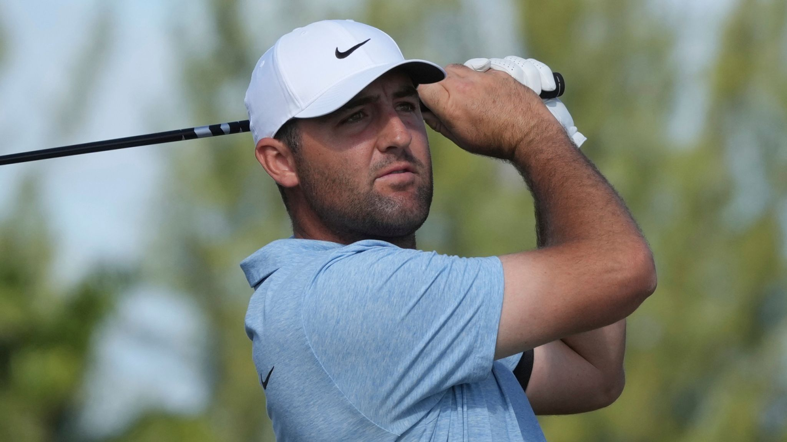

Scottie Scheffler: World number one
withdraws from PGA Tour season-opener
after sustaining hand injury on Christmas
Day
Scottie Scheffler sustained hand injury while preparing dinner on Christmas Day; world
number one has been ruled out for three to four weeks and will require surgery after 'smal
l
glass fragments' remained in his palm

World number one Scottie Scheffler will miss the PGA Tour's 2025
season-opening tournament after sustaining a hand injury while preparing
Christmas dinner.
Scheffler, who successfully defended his title at the Hero World
Challenge earlier this month, was due to play at The Sentry event in
Hawaii from January 2-5.
But the 2024 FedExCup Champion has been ruled out for three to four weeks after cutting his hand on broken glass and needing
surgery.
"On Christmas Day while preparing dinner, Scottie sustained a
puncture wound to the palm of his right hand from a broken glass,"
the American's manager, Blake Smith, said in a statement.
"Small glass fragments remained in the palm which required surgery.
"He has been told that he should be back to 100% in three to four
weeks. Unfortunately, he will have to withdraw from The Sentry."
Scheffler's next scheduled tournament is The American Express,
which takes place in California from January 16-19.
Scheffler said he had "lived almost a full lifetime this one year" after securing FedExCup victory, capping off a "nuts"
season - both on and off the golf course.
The 28-year-old became the first player to win The Players, The Masters and the FedExCup in the same season.
Scheffler closed out a four-stroke victory at the season-ending Tour Championship, where he never relinquished top spot
at any point during the four days and became the first player since Tiger Woods in 2007 to register seven or more victories in a year on the PGA Tour.
After winning The Masters for a second time in three years, he was arrested and charged ahead of his second round at the PGA Championship in May.
The charges were later dropped with Scheffler going on to win the next two Signature Events - the Memorial Tournament and Travelers Championship -
before securing gold for Team USA at the Paris Olympics and winning the PGA Tour's FedExCup for the first time in his career.
.jpeg)